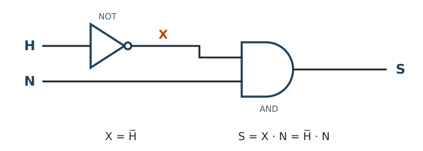

Con NOT, AND y OR se puede construir cualquier decisión. Pero hay otras tres puertas muy usadas, que son combinaciones de las anteriores.
NAND, NOR y XOR
- NAND es una AND seguida de una NOT. Da lo contrario que la AND: S = 0 solo si todas las entradas valen 1. Expresión: S = no (A · B).
- NOR es una OR seguida de una NOT. Da lo contrario que la OR: S = 1 solo si todas las entradas valen 0. Expresión: S = no (A + B).
- XOR (o exclusiva) da S = 1 cuando las dos entradas son distintas. Expresión: S = A ⊕ B.
En los símbolos, el circulito a la salida significa «negado»: el símbolo de la NAND es el de la AND con circulito, y el de la NOR, el de la OR con circulito.
| A | B | NAND | NOR | XOR |
|---|---|---|---|---|
| 0 | 0 | 1 | 1 | 0 |
| 0 | 1 | 1 | 0 | 1 |
| 1 | 0 | 1 | 0 | 1 |
| 1 | 1 | 0 | 0 | 0 |
La XOR en casa: la luz del pasillo
En muchos pasillos hay un interruptor en cada extremo, y cualquiera de los dos enciende o apaga la luz. Si A y B son los dos interruptores (1 = palanca hacia arriba), la luz está encendida cuando las palancas están en posiciones distintas. Al mover cualquiera de las dos, las posiciones pasan de distintas a iguales o al revés, y la luz cambia. Es una XOR: S = A ⊕ B.
Tu primer circuito de dos puertas
Ejemplo resuelto: el riego automático
Situación: el riego de un huerto debe funcionar si la tierra no está húmeda y es de noche (así el agua no se evapora).
| Letra | Qué significa el 1 |
|---|---|
| H | El sensor detecta la tierra húmeda. |
| N | El sensor de luz detecta que es de noche. |
| S | El riego funciona. |
Primero hace falta «no H»: una puerta NOT. Su salida, que llamamos X, entra junto con N en una AND.

En la tabla añadimos una columna para la salida intermedia X, que es la salida de una puerta que entra en otra. Así se comprueba el circuito puerta a puerta:
| H | N | X | S |
|---|---|---|---|
| 0 | 0 | 1 | 0 |
| 0 | 1 | 1 | 1 |
| 1 | 0 | 0 | 0 |
| 1 | 1 | 0 | 0 |
Solo riega con H = 0 y N = 1: tierra seca y de noche. ✔
Practica tú
- Completa la salida S de un circuito con una OR seguida de una NOT. ¿Qué puerta única hace lo mismo?
A B S 0 0 0 1 1 0 1 1 - ¿Cuánto vale S en cada caso? a) NAND con A = 1, B = 1. b) XOR con A = 1, B = 0. c) NOR con A = 0, B = 1.
Comprueba tu respuesta
- S vale 1, 0, 0, 0 (de arriba abajo). Es lo mismo que una puerta NOR: S = no (A + B).
- a) 0: las dos valen 1, la AND daría 1 y la NAND lo niega. b) 1: son distintas. c) 0: B vale 1, la OR daría 1 y la NOR lo niega.
La prueba corta
La «Prueba binario y puertas» cuenta para la nota
Es una prueba evaluable: su nota forma parte de la nota de la unidad. Por eso se hace como un examen normal:
- Se hace al empezar la sesión siguiente a la de esta página: así tienes tiempo de repasar en casa.
- Individual, en papel y en clase, 20 minutos.
- Sin apuntes ni hoja de referencia.
- Entra el binario (página 2) y las seis puertas (páginas 3 y 4).
- Al terminar, entregas la hoja de la prueba.
- La nota y la corrección comentada aparecerán en la tarea «Prueba binario y puertas» de Moodle, para que sepas qué repasar antes del reto.
Para preparar la prueba
- Paso números de decimal a binario y de binario a decimal, de hasta 8 bits, escribiendo las operaciones (como el ejercicio 4 de «Ejercicios de binario»).
- Reconozco cada puerta por su símbolo y escribo su nombre.
- Escribo de memoria las tablas de NOT, AND, OR, NAND, NOR y XOR.
- Escribo la expresión de cada puerta con la notación de clase.
Si dudas en alguna, vuelve al laboratorio en modo Predecir o al conversor en modo Reto.
Más ejercicios para practicar
Ejercicios de puertas lógicas (PDF). Cada ejercicio trae su resultado debajo para que compruebes si lo has hecho bien; los marcados «Refuerzo» traen parte del trabajo hecho y los pasos señalados.